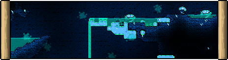

Riven Hive
"An ecosystem the Primordial Amoeba forced into existence so it could eat away at the world."
The Riven Hive is an [link evil biome | | Evil_Biomes.html] with a blue-teal and aquatic/bug-like theme, in contrast to the red and gorey [link Crimson | | https://terraria.wiki.gg/wiki/The_Crimson] and purple decaying [link Corruption | | https://terraria.wiki.gg/wiki/The_Corruption], its counterparts. It is also an alternative to the [link Defiled | | Defiled_Wastelands.html] and currently planned [link Ashen | | Ashen_Factory.html]. Every world will contain one of the four generated randomly except for special seeds (each with a 25% chance of occurring) or chosen by the player upon world creation. All contain unique hazards and feature their own [link enemies], [link items | | List_of_Items.html], [link blocks] and their own methods of inflicting [link Assimilation]. The [link tools], [link weapons] and [link armor] obtained via Riven materials generally have decent advantages over those obtained via Corruption or Crimson materials, but are usually obtained from tougher enemies within the biome. Currently, the Riven Hive is deemed the hardest of the four currently-implemented evil biomes, but is also the most rewarding.
The Riven Hive will initially spawn in the world as a giant crack in the ground with chambers branching out from the sides. On the surface, [link Riven Grass], [link Exoskeletal Trees | | Exoskeletal_Tree.html] and [link Acetabularia] will generate. Within the Hive, [link Wrycoral] will spawn hanging from the ceilings of the chambers within. Unlike the vanilla counterparts, the Riven does not have [link thorny bushes | | https://terraria.wiki.gg/wiki/Plants#Thorny_bushes].
The Riven spreads and slowly converts adjacent tiles to their Riven variants. The crack, Riven Altars and [link Gel Blisters | | Gel_Blister.html] will only appear upon world generation, and will not spawn in a Riven area that has formed from the spread. If the Riven manages to take over a new area, then that area will adopt the Riven's theme and its respective enemies may spawn. For an area to be considered Riven, at least 300 tiles of Riven Grass or Riven blocks must be present.
Contents
See the [link Underground Riven Hive] for the content found during Hardmode in and under the [link Cavern | | https://terraria.wiki.gg/wiki/Cavern] layer.
{biomecontent { header:'Characters' items:[ { items:[ ['Pre-Hardmode:', '$default', 'https://terraria.wiki.gg/wiki/Pre-Hardmode'] ['Amebic Slime', '$fromStats'] ['Barnacleback', '$fromStats'] ['Bottomfeeder', '$fromStats'] ['Cleaver', '$fromStats'] ['Flagellant', '$fromStats'] ['Measly Moeba', '$fromStats'] ['Pustule Jellyfish', '$fromStats'] ['Riven Protoform', '$fromStats'] ['Single-Cellular Nautilus', '$fromStats', 'Single_Cellular_Nautilus.html'] ['Spider Amoeba', '$fromStats'] ['World Cracker', '$fromStats', '$default', '(boss)'] ] } { items:[ ['Hardmode:', '$default', 'https://terraria.wiki.gg/wiki/Hardmode'] ['Amoebeye', '$fromStats'] ['Barnacle Mound', '$fromStats'] ['Amoeba Bugger', '$fromStats', '$default', '(from Barnacle Mound)'] ] } { header:'[link Defiled Desert | $default | https://terraria.wiki.gg/wiki/Desert]:' items:[ ['Amebic Mummy', '$fromStats'] ['Trijaw Shark', '$fromStats'] ] } ] } { header:'Unique Drops' items:[ { header:'From [link Barnacleback], [link Flagellant], [link Measly Moeba], [link Riven Protoform], [link Single-Cellular Nautilus | | Single_Cellular_Nautilus.html], [link Spider Amoeba] and [link Trijaw Shark]:' class:'miniheader inlineblock' items:[ ['Ancient Riven Helmet', '§ModImage§/Items/Armor/Riven/Riven2_Helmet.png', 'Ancient_Riven_Armor.html'] ['Ancient Riven Breastplate', '§ModImage§/Items/Armor/Riven/Riven2_Breastplate.png', 'Ancient_Riven_Armor.html'] ['Ancient Riven Greaves', '§ModImage§/Items/Armor/Riven/Riven2_Greaves.png', 'Ancient_Riven_Armor.html'] ] } { header:'From [link Barnacle Mound], [link Barnacleback], [link Pustule Jellyfish], [link Riven Protoform] and [link Spider Amoeba]:' class:'miniheader inlineblock' items:[ ['Bud Barnacle', '$fromStats'] ] } { header:'From [link Amebic Slime], [link Cleaver], [link Measly Moeba], and [link Spider Amoeba]:' class:'miniheader inlineblock' items:[ ['Ameballoon', '$fromStats'] ] } { header:'From [link Flagellant], [link Riven Protoform] and [link Trijaw Shark]:' class:'miniheader inlineblock' items:[ ['Jam Sandwich', '$fromStats'] ] } { header:'From [link Amoebeye]:' class:'miniheader inlineblock' items:[ ['Meat Grinder', '$default', 'https://terraria.wiki.gg/wiki/Meat_Grinder'] ] } { header:'From [link Amebic Slime]:' class:'miniheader inlineblock' items:[ ['Gel', '$default', 'https://terraria.wiki.gg/wiki/Gel'] ] } { header:'From [link Barnacleback]:' class:'miniheader inlineblock' items:[ ['Avulsion', '$fromStats'] ] } { header:'From [link Flagellant]:' class:'miniheader inlineblock' items:[ ['Flagellash', '$fromStats'] ] } { header:'From [link Riven Protoform]:' class:'miniheader inlineblock' items:[ ['Symbiote Skull', '$fromStats'] ] } { header:'From [link Amebic Mummy]:' class:'miniheader inlineblock' items:[ ['Blindfold', '$default', 'https://terraria.wiki.gg/wiki/Blindfold'] ['Dark Shard', '$default', 'https://terraria.wiki.gg/wiki/Dark_Shard'] ['Megaphone', '$default', 'https://terraria.wiki.gg/wiki/Megaphone'] ['Mummy set', '$default', 'https://terraria.wiki.gg/wiki/Mummy_set', '(rare)'] ] } { header:'From [link Trijaw Shark]:' class:'miniheader inlineblock' items:[ ['Nachos', '$default', 'https://terraria.wiki.gg/wiki/Nachos'] ['Shark Fin', '$default', 'https://terraria.wiki.gg/wiki/Shark_Fin'] ] } { header:'From [link World Cracker]:' class:'miniheader' items:[ ['Encrusted Ore', '$fromStats'] ['Riven Carapace', '$fromStats'] ['Amoeba Hook', '$fromStats'] ['Teardown', '$fromStats'] ['World Cracker Mask', '$fromStats'] ['World Cracker Trophy', '$fromStats'] ['Treasure Bag', '§ModImage§/Items/Other/LootBags/World_Cracker_Bag.png', 'Treasure_Bag.html', 'in [link Expert Mode | | https://terraria.wiki.gg/wiki/Expert_Mode]'] ['Protozoa Food', '$fromStats', '$default', '(from treasure bag)'] ['World Cracker Relic', '§ModImage§/Tiles/BossDrops/World_Cracker_Relic_Item.png', '$default', 'in [link Master Mode | | https://terraria.wiki.gg/wiki/Master_Mode]'] ['Amebic Vial', '$fromStats', '$default', 'in [link Master Mode | | https://terraria.wiki.gg/wiki/Master_Mode]'] ['Fleshy Globe', '$fromStats', '$default', 'in [link Master Mode | | https://terraria.wiki.gg/wiki/Master_Mode]'] ] } { header:'From [link vegetation | | https://terraria.wiki.gg/wiki/Plants]:' class:'miniheader' items:[ ['Pawpaw', '$fromStats', '$default', '(when [link shaking | | https://terraria.wiki.gg/wiki/Trees#Shaking] [link Petrified Trees | | Petrified_Tree.html])'] ['Periven', '$fromStats', '$default', '(when [link shaking | | https://terraria.wiki.gg/wiki/Trees#Shaking] [link Petrified Trees | | Petrified_Tree.html])'] ['Marrowick', '§ModImage§/Tiles/Riven/Marrowick_Item.png', '$default', '(from trees)'] ['Acetabularia', '§ModImage§/Tiles/Riven/Acetabularia_Item.png'] ['Wrycoral', '§ModImage§/Tiles/Riven/Wrycoral_Item.png'] ] } { header:'From terrain:' class:'miniheader' items:[ ['Spug Flesh', '§ModImage§/Tiles/Riven/Riven_Flesh_Item.png'] ['Silica', '§ModImage§/Tiles/Riven/Silica_Item.png', '$default', '([link Riven Desert | | https://terraria.wiki.gg/wiki/Desert])'] ['Primordial Permafrost Block', '§ModImage§/Tiles/Riven/Primordial_Permafrost_Item.png', '$default', '([link Riven Snow biome | | https://terraria.wiki.gg/wiki/Snow_biome])'] { items:[ ['Gel Blister'] ['Amebolize Incantation', '$fromStats'] ['Riverang', '$fromStats'] ['Splitsplash', '$fromStats'] ['Amoeba Toy', '$fromStats'] ['Primordial Soup', '$fromStats'] ] } ] } { header:'From [link fishing | | https://terraria.wiki.gg/wiki/Fishing]:' class:'miniheader' items:[ ['Tearracuda', '$fromStats'] ['Ocotoral Bud', '$fromStats'] ['Scabcoral Lyre', '$fromStats', '$default', '([link Hardmode | | https://terraria.wiki.gg/wiki/Hardmode] only)'] ['Crusty Crate', '$fromStats', '$default', '([link Pre-Hardmode | | https://terraria.wiki.gg/wiki/Pre-Hardmode] only)'] ['Festering Crate', '$fromStats', '$default', '([link Hardmode | | https://terraria.wiki.gg/wiki/Hardmode] only)'] ] } { header:'From [link Angler Quests | | https://terraria.wiki.gg/wiki/Angler#Quest_list]:' class:'miniheader' items:[ ['Bonehead Jellyfish', '$fromStats'] ] } ] } { header:'Music' items:[ ['Music Box (Riven Hive)', '§ModImage§/Tiles/MusicBoxes/Music_Box_RH_Item.png', 'Music_Boxes.html'] ] } biomecontent}Spread
The Riven spreads itself, similar to the alternate evils and [link the Hallow | | https://terraria.wiki.gg/wiki/The_Hallow]. This means that it slowly converts certain susceptible tiles that are in the vicinity of existing Riven blocks. While its spreading capabilities are very limited during pre-Hardmode, it spreads much faster and more aggressively after defeating the Wall of Flesh. Defeating [link Plantera | | https://terraria.wiki.gg/wiki/Plantera] for the first time reduces the speed of the Riven's spread by 1/2 (50%).
Riven Desert and Snow
In Hardmode, the Riven can spread through a [link Desert | | https://terraria.wiki.gg/wiki/Desert] or [link Snow biome | | https://terraria.wiki.gg/wiki/Snow_biome] transforming them into their respective Riven versions. Both the Riven Desert and Snow biome, are fairly similar to the Hive with the music and enemies being the same. The Riven Desert features its own set of enemies alongside the typical Riven enemies as well.
[link Sand | | https://terraria.wiki.gg/wiki/Sand_Blocks] is replaced by [link Silica], and cacti drop ordinary [link cactus | | https://terraria.wiki.gg/wiki/Cactus] even though they appear Riven in nature. [link Waterleaf | | https://terraria.wiki.gg/wiki/Waterleaf] is not able to grow in Riven Deserts. If a Riven Hive biome overlaps a Desert during world generation, Sand will be converted to Silica, but it will not spread until Hardmode.
[link Snow Blocks | | https://terraria.wiki.gg/wiki/Snow_Block] are not convertible, but [link Ice Blocks | | https://terraria.wiki.gg/wiki/Ice_Blocks] can be converted into [link Primordial Permafrost]. Primordial Permafrost can be created during generation if a Riven Hive overlaps a Snow biome, but it will not spread until Hardmode.
Surface Desert
- [link Amebic Mummies | | Amebic_Mummy.html]
Underground Desert
- [link Dark Lamias | | https://terraria.wiki.gg/wiki/Lamia]
- [link Desert Spirits | | https://terraria.wiki.gg/wiki/Desert_Spirit]
- [link Torn Ghouls | | Torn_Ghoul.html]
Notes
- The Riven Hive can be created or spread artificially using [link Riven Seeds], [link Sentient Powder], [link Gooey Water] and either the [link Clentaminator | | https://terraria.wiki.gg/wiki/Clentaminator] or the [link Terraformer | | https://terraria.wiki.gg/wiki/Terraformer] with [link Teal Solution], obtainable from the [link Steampunker | | https://terraria.wiki.gg/wiki/Steampunker] during a [link Blood Moon | | https://terraria.wiki.gg/wiki/Blood_Moon] in Riven worlds.
- It is possible to create an artificial alternate evil biome in a Defiled world without the use of another world.
To do so, one must buy any of the evil seeds in [link Hardmode | | https://terraria.wiki.gg/wiki/Hardmode] from the [link Dryad | | https://terraria.wiki.gg/wiki/Dryad] while in a [link Graveyard | | https://terraria.wiki.gg/wiki/Graveyard].
Tips
- When dropping into the Riven Hive, be wary of pools of amebic gel below as falling in them means the player is inflicted with both [link Torn] and [link Riven Assimilation | | Assimilation.html], which makes the build up of Torn significantly faster.
It is also dangerous to drop into these pools as the amebic gel is more viscous than regular water, and could prevent the player from a swift exit.
- Using an [link Antisolve Potion] counteracts the effects of Torn, but does not prevent the player from being fully assimilated to the Riven.
The use of this potion could significantly increase the duration of your trips to the Riven Hive and reduce risk as your max life will not be altered.
- Origins' [link developers] greatly recommend the use of the [link Light Mod | | https://steamcommunity.com/sharedfiles/filedetails/?id=2670628346&searchtext=light+mod] in Riven worlds.
Trivia
- The Riven was originally planned to dawn a fleshy tan and orange coloration like the [link Ancient Riven Armor] set. It was eventually decided that the Riven was due for a retheme as the original appeal and coloration would make it too similar to the [link Flood | | https://www.halopedia.org/Flood] from the Halo series. Now the Riven dawns a uniquely blue and beautiful aquatic/bug-like theme that makes it stand out from the other evils while also not requiring a shader style.

- If the Origins Music mod is not enabled the Crimson theme will instead play whenever the player enters the Hive.